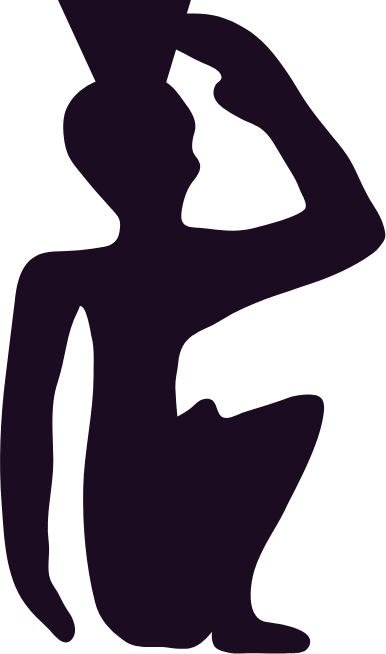
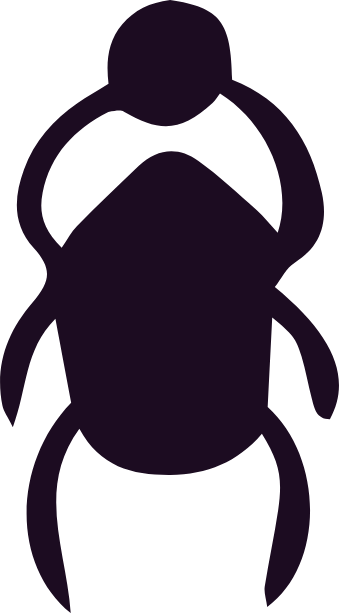
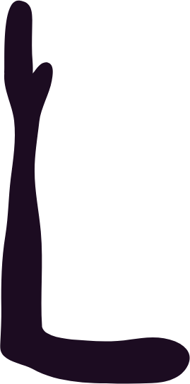
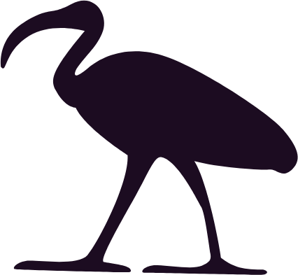

Everybody wants the shield.
They come in asking how to keep other people's stuff out. How to not get wrecked by the room. How to walk into a family dinner and leave with their own energy still in their own body. Fair question. I had it too.
But the shield is the second thing. It is never the first thing, and if you build it first you end up with a very well defended person who is not actually standing anywhere.
So: ground first. Every time. The more you know who you are and where your feet are, the less of anybody else's weather lands on you in the first place. You cannot be knocked off a thing you are not standing on.
That is the whole teaching. The rest is just how.

The First Thing
Roots
Sit down. Feet flat on the floor, both of them. Legs uncrossed, arms uncrossed, hands on your knees with the palms facing down. You are not holding anything right now. You are putting something down.
Start at the top of your head and bring everything down.
Down through the neck. Down the arms. Into the belly. Down into each leg, through the knees, into the soles of your feet. Let it move like water finding the lowest place in you, because that is what it is doing.
When you can actually feel your feet, grow roots out of them.
Not a nice idea about roots. Roots. Down through the floor, through the foundation, through the dirt, down past where the dirt stops being dirt, until they find stone. Then hook in. You are a tree now and you are not going anywhere.
Stay there until something in your chest drops half an inch.
Ninety seconds and no chair
Go outside, take your shoes off, and put your ass in the grass. Hug a tree if there is one. Hold a plant if there isn't. The body knows how to do this without any instructions from you, and dirt has never once needed a technique.
The Second Thing
The Cloak
Now, and only now, the shield.
Once you are rooted, wrap yourself. A cloak, head to foot, with a hood. Pick your own colour. Mine is the deep blue I associate with Michael, and that is a preference, not a prescription. If yours is gold or green or white or something you cannot name, that is yours and it is correct.
The cloak has one rule: love comes through it, and nothing else does. It covers everything except your eyes, because you still have to see.
Put it on before you leave the house. Put it on before the meeting. Put it on when you notice you have gone thin.

It is a battery, not a wall. It runs down. The day you forget is not a failure, it is Tuesday.
You will have to put it on again tomorrow and the day after that. Re-wrap and move on.
When You Are Jammed
The Lotus Ladder
This one is for when you are not scattered, you are jammed. Something is stuck and you cannot find it.
Go down the body, one station at a time, and see each one as a flower. Here is the part that matters more than the colours: each flower opens as far as it wants to and not one millimetre further. You are not prying anything open. You are asking.
A closed flower is information, not a problem. If the throat will not open today, the throat has a reason, and forcing it is how people end up saying true things to the wrong person. Note it. Come back.
When you get to the bottom, say it out loud:

I am safe in my body. I am safe and grounded on this earth. It is safe for me to be here, right now, in this body, on this earth.
Out loud
Out loud. Words are spells and you are casting one.

Not Mine
The Ultraviolet Flame
This one is not mine. It came to me through others, and the written lineage I can point to runs through Carol Channell-Cox's Christ Energy Prayer, which I pray to open every session. I use it constantly and I did not invent a word of it.
For the moment you are carrying something that is not yours and you know it.
See the flame. Scan yourself and find the thing that came in from outside. You will know which one it is; it has a different texture than your own grief does.
Then ask your guides to take it, out loud, and say plainly that it is not yours and not for your highest good. Thank them. Scan again. Then go back to the roots, because you have just opened something and you do not leave it open.
The move inside this, and it is the move inside everything I pray, is that nothing gets destroyed. It gets returned.
The flame is not an incinerator. It is a door home for something that wandered in.

Optional
Stones, briefly
I carry stones. I am not going to make a science claim about them and I am not going to apologise for them either.
- Black tourmaline for deep work, in the pocket. Root-chakra stone, so it works on the ground rather than the shield, which is the whole point of this page. It also takes your own dark thoughts, not just the room's, which is the use nobody mentions.
- Tiger's eye when you need to feel solid in the world. Warriors carried it. Make of that what you want.
- Selenite to clear. Wand it slowly from your crown to your feet with your eyes closed, and where you catch something stuck, hold it there and ask. Never run selenite under water. It will dissolve, and you will be sad. Moonlight or smoke.
If stones are not your thing, skip this whole section. The practices above do not need them and never did.
Working On Others
Before and after
Before any work on anybody else: be clean, be grounded, and say it.
I am a conductor for light, and I am protected by the Source.
After any work on anybody else: shut it down. Wash your hands. Actually wash them. You wouldn't wipe your ass and then go straight to dinner, and you don't close a session by just standing up and checking your phone either.

The Last Thing
Go back to the top
Everything on this page is secondary to the first thing.
The more grounded you are, and the more certain you are of who you actually are, the less any of this you will need. Toxic rooms stop being a threat and start being weather. You will still put the cloak on, because it is cheap and it works. But you will notice you are doing it less out of fear and more out of habit, and that is the direction we are going.
Protection is not the goal. Protection is what you do while you are building the thing that makes protection unnecessary.
Ground first.